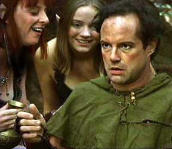
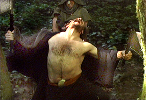
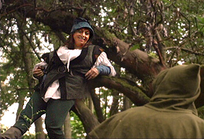
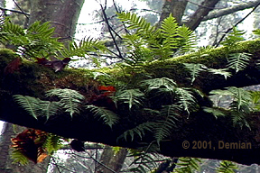

Editor
The Silent One
|
The Silent One, written and directed by Ray Woodall, is a sword and sorcery fantasy, with a noir edge. Keeping a vow of silence is only one quirk of our hero, as he rids the forest country of the forces of darkness. Roaming the countryside, he battles the agents of evil, and, finally, the Evil One himself. The story contains many battles and a host of odd characters such as a Gnome, a Witch, as well as Dryads, Ogres, Elves, Druids, Villagers, Wildmen, Northmen, Northwives, and She-Devils. The only horror it did not have was Elvis.
 Elves (Darla Wigley, Moira Klackner) entice The Silent One (Larry Crist) to drink
 The Silent One battles a Wildman (Scott Robinson)
 Friendly Gnome (Pamela Shane) attempts to aid The Silent One
 Forest Shot by Demian
I edited four versions. They were one-and-a-half, five, 10 and 20 minutes long. The first two versions are the ones that will be shown for promotions and to raise money for future projects. The longest version is an archive of the whole shoot for Ray’s records. The forest images I made were shot with a three-chip miniDV camera. Computer editing utilized a Canopus capture card on an NT. The programs I use are Premiere and Rex Edit. |

Ray Woodall may be reached at:
Forest Photos © 2003, Demian
Graphic Cypher
9442 - 21 Ave., SW, Seattle, WA 98106
768-0828; rewoodall@earthlink.net
All contents © 2003, Demian
To Demian’s: Directing Résumé
Acting Résumé
Back to: Sweet Corn Productions
Demian
Sweet Corn Productions
Box 9685, Seattle, WA 98109-0685
206-935-1206
demian@buddybuddy.com
www.buddybuddy.com/sweet.html